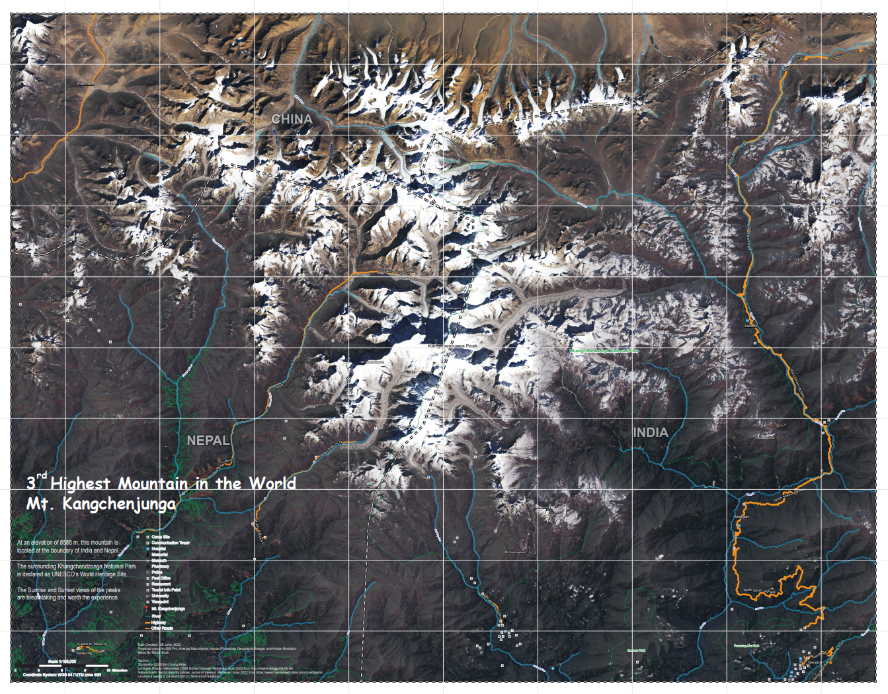
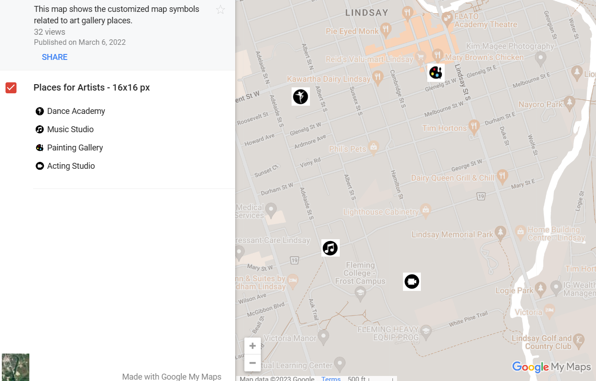

Starting With Basics
For better representation of information on maps, understanding of concepts of cartography like visual hierarchy, text and typography, map elements, color palettes, labels and annonations are much necessary. All of these fundamentals are implemented in the map below which showcases the 2 important medical facilities like pharmacy and medical centres locations in New York City during the Covid-19 pandemic. Other than that population density per square mile as per 2020 census is displayed by the pink color palette where darker shade shows more population and lighter shades shows lesser population which in turn helps the user about how crowded the place is.

Infographics
A detailed infographic map poster of size 34x54 inch is attached as pdf here which demonstrates the 6th goal of United Nations Sustainable Development, i.e. Clean Water & Sanitation. A particular interest of Domestic freshwater consumption amongst the countries is evaluated here. The map layout contains 3 maps related to topic which were created using ArcGIS Pro and after that all other graphic elements used for comparison are put together in Adobe Illustrator.
Different Mapping Techniques
Have an insight about the fundamentals of point, line and area mapping techniques used to communicate the geographic information effectively. Here are some example maps that demonstrate the appropriate selection of these mapping techniques to make them more coherent and logical.
| Mapping Technique | Description | Link to view Map |
|---|---|---|
| Dot Density | Each dot represents a center quantity of a variable | Domestic Freshwater Usage of Countries |
| Proportional Dot Density | Varying size of a symbol in proportion to quantity it represents | Internet Users Around The World |
| Radial Flow | Depicts the type of movement between places | My Wishlist Cities |
| Distributive Flow | Width of flow lines are drawn in proportion to the quantity of the movement represented | Immigration to Toronto |
| Choropleth | Rendering of data collected for individually identifiable enumerations units, displaying derived values, proportional to the area | Proportion of Restaurants in States of India |
| Choropleth Bivariate | Display the comparison between between two variables | Comparing Toronto's Neighborhoods Household Income to Higher Education |
Terrain Visualization
Here is attached a large format General Reference map of the 3rd highest mountain peak in the world, i.e Mt. Kangchenjunga having map scale of 1:100000. A mosaic satellite image of Landsat 8 bands 2,3,4 and 5(2013) tiles downloaded from USGS Earth Explorer is the base data used here for rendering terrain at this location. Vector data for references of roads, waterways, points of interest and place names was downloaded for India, Nepal & China and then merged and generalized using tools in ArcGIS Pro. Then 19 different layers are created in Adobe Photoshop with the help of Geographic Imager to display the terrain effects on the map as appealing as possible. The steps to achieve this final map is described in flowchart above.
In addition, this mapping technique is applied for another reference map to represent the terrain surface of the Western Ghats in South India. Please click here to view the map.
Map Symbols
The above map symbol set of size 16x16 pixel to show the places of art studios are designed in Adobe Illustrator. Symbol sizes and the map scale range on which they should be displayed are decided based on observations and testing of present map icons and the details of roads and buildings on various map scales. This set of symbol was found to be ideal for a map greater than scale of 1:20000.
